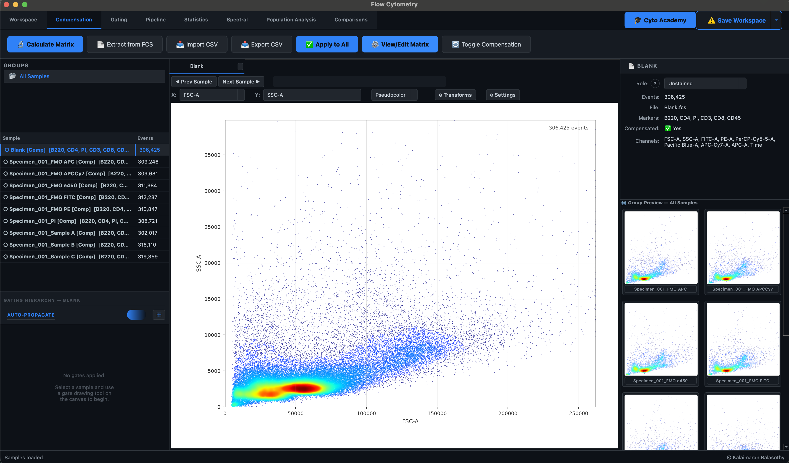
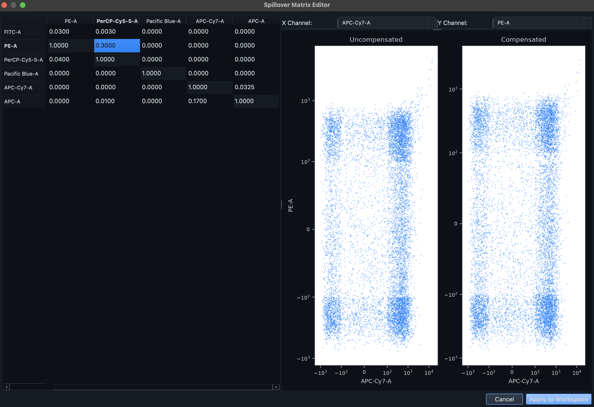

Compensation
Spectral compensation computationally isolates target fluorophore emissions by mathematically eliminating signal bleed-through from overlapping spectral signatures. The Compensation tab provides a robust, algorithm-driven environment for generating, reviewing, and applying high-dimensional spillover matrices.

1. Getting a Matrix: Choose a Method
The tab has a slim header and three pages.
Header. Pick a Method and click the button beside it; the text next to it says what the method needs and what it found in your loaded samples. The line underneath names the matrix in use, the method behind it (for example 6×6 · Embedded in the FCS files, fine-tuned by hand), how many samples it is applied to, and the outcome of your last action. ↩ Revert Edits appears there while you have unapplied edits.
Pages.
- ⚙ Method setup — for the selected method: how it works and its limits, its options, the samples it will use right now, and (for calculated methods) a report of what the last run rested on. The tab opens on this page.
- Matrix — the matrix editor and its before/after preview (section 2).
- 🗂 Matrices — every matrix kept in this workspace: compare them, name them, export one, and apply one to your samples (section 3).
Every matrix goes through the same steps: get it with a method, fine-tune it on the Matrix page, then apply it from the Matrices page. Running a method again replaces the matrix in the editor with that method's own numbers and clears the fine-tuned mark; the earlier result stays on the Matrices page.
| Method | Button | Needs |
|---|---|---|
| Embedded in the FCS files (default) | 📄 Extract from FCS | A $SPILL / $SPILLOVER keyword in a loaded file |
| Single-stain controls | 🔬 Calculate Matrix | At least two samples with role Single Stain (an Unstained Control is optional) |
| FMO controls | 🧮 Estimate from FMOs | Samples with role FMO Control |
| Import from a file | 📥 Import CSV | A .csv, .tsv or .txt matrix, e.g. from FlowJo or R |
| Manual entry | ✍ Start a blank matrix | A loaded sample (its fluorescence channels define the matrix) |
Fitting on a gated population
Single-stain and FMO calculations use every recorded event by default. To calculate on the real cells only, draw a scatter gate (for example Cells on FSC/SSC) on the control samples in the Workspace tab, then pick it under Fit on in Method setup.
- Only gates drawn on FSC/SSC are offered, including gates nested under other scatter gates (
Cells › Singlets). A gate on a fluorescence axis depends on the very compensation being calculated, and can cut away the bright events the calculation needs. - The gate only chooses which events the calculation uses. The finished matrix is applied to every event of every sample.
- A control without the chosen gate is used whole; the Events used column says so for each control.
Embedded in the FCS files (default)
Many acquisition cytometers record the acquisition-time matrix in the FCS metadata. When your files carry one, Karcytics loads and applies it as soon as the samples are loaded, and this method is the one selected when you open the tab. 📄 Extract from FCS re-reads it, which is also how you go back to the cytometer's numbers after editing.
Method setup lists which samples carry a matrix and whether they agree with the one being read. Read from picks the sample; by default it is the first one that has a matrix.
Single-stain controls
Assign the roles Single Stain (and optionally Unstained Control) in the Properties Panel first. Each control's primary channel is the one with the highest median of its uncompensated events; spill into every other detector is the ratio of medians, after subtracting the unstained background. Method setup lists the controls and how many events of each are used.
FMO controls
A fluorescence-minus-one control carries every dye except one, so whatever its missing dye's detector records is spill from the other dyes. Karcytics fits that detector against the others for each FMO and solves for the spillover matrix. Method setup spells out each step.
- Assign the role FMO Control to each sample in the Properties Panel.
- Which dye each tube lacks is worked out from the tube's data: the one channel where it is dimmer than the other FMO controls, with none of its other channels coming close (so a tube that is simply dim all round is not placed). This is done once and kept with the workspace, so the Missing dye dropdown shows that dye rather than a generic "auto" entry. The Method setup table says how each tube was placed: from its data, set by you, or guessed from its name.
- A tube's name is only used when the data can't settle it (it needs at least three FMO controls to compare). A name guess is flagged for you to check and is not kept; pick the dye in the dropdown to confirm it.
- Change the dye in the Missing dye column of that table, or in the Properties Panel; your choice always wins. Detect again forgets it and works it out afresh.
- Only one tube is used per dye. A tube that can't be placed, or that duplicates another, is listed as not used with the reason.
- A detector without an FMO gets no estimate. Those cells are left at 0 and shown in grey italic in the matrix, so you can see what still needs filling in by hand.
- The fit is robust: events with signal in the missing dye's detector that the other dyes don't explain (dead cells, aggregates) are down-weighted rather than read as spill.
- See it step by step in Method setup draws the fit on one of your own tubes (pick the tube above the plot; with no FMO controls loaded it uses made-up example data). Next and Play walk through four steps: what the tube recorded, an ordinary fit, the robust fit with the down-weighted events greyed, and the spill removed, with the cloud sliding flat. It follows the Fit on gate, so it shows the same events the calculation uses.
- After a run, the fit report in Method setup lists, per detector: the tube used, the events fitted, the share set aside as outliers, how much of the detector's signal the fit attributes to spill (R²; near 0 simply means little spills into it), and the largest spill found.
- Treat the result as a starting point: check each pair on the preview and fine-tune.
Import from a file
Load a matrix computed elsewhere. Channel names are read from the header row.
Manual entry
Starts from a matrix with 1 on the diagonal and 0 everywhere else, which compensates nothing, for you to fill in by hand on the Matrix page. Use it when you have no controls and no embedded matrix, or to type in values from a lab notebook or a publication.
- The matrix covers the fluorescence channels of the sample chosen under Read from in Method setup (by default the first loaded sample); the page lists them.
- On the Matrix page, cells you haven't set yet are shown in grey italic and the ones you have typed turn green bold, so you can see what is left to do.
2. Reviewing and Fine-Tuning the Matrix
Once a matrix is loaded or computed, it is vital to review it for excessive spectral overlap.
- Open the Compensation tab and its Matrix page. The Matrix dropdown above the table switches the editor between the matrix in use and any saved one (and back to your Unsaved edits, which are kept while you look at another); switching never applies anything to the samples.
- Inspect the off-diagonal coefficients. Each row is a dye and each column is a detector: a cell is the share of the row dye's signal picked up by the column detector. The two cells of a pair (for example FITC → PE and PE → FITC) are separate numbers and are edited independently.
- Click a cell to plot its pair — its dye on X, its detector on Y. The two cells behind the plotted pair are highlighted, and the note under the matrix says which way each one moves the events.
-
Check the result in the preview on the right, which redraws as you type:
- Sample picks which sample is shown. All samples (one row each) shows every loaded sample at once, one row per sample; the rows are drawn in the background, so each shows a placeholder until its plots arrive. Plots are always square, and the rows are redrawn to fit when you resize the window.
- Population previews only the events inside a gate, for example Cells. Any gate of the loaded samples can be chosen; a sample without it is shown whole, and its caption says so. This only changes what the preview draws, not the matrix.
- View chooses the plots:
- Scatter shows the same events Before (raw signal) and After (with the matrix as edited), on identical axes.
- Histogram overlays before (grey) and after (colour) for each of the two channels.
- Scatter + histograms shows all four.
- The ? button under the matrix opens What a good matrix looks like.
What to aim for
A dye should only be seen by its own detector. After compensation, cells that carry dye A but not dye B must read the same in B's detector as cells that carry neither.
- Scatter: the population that is bright on X only should lie level, its centre at the same height as the negative population's centre. Still tilted upwards means the cell is too low; bent below the negatives means it is too high. Bright events fan out wider than dim ones: that spread is measurement noise no value removes, so judge the centre of the cloud, not its edges.
- Histogram: in a sample without dye B, the After curve of B's detector should be a single, roughly symmetric peak at the unstained level. A tail left on the right means under-compensated; a peak pushed left of zero means over-compensated.
- Values: there is no target number; a value is right when the plots are. As a sanity check, most cells are between 0 and about 0.3, and a value near or above 1 usually means a wrong pairing or a bad control.
- Which sample: judge a cell where its row dye is bright and its column dye is absent (the single-stain control for the row dye, or an FMO lacking the column dye). On fully stained samples alone, cells that really carry both markers look like spill.
- Across samples: spill belongs to the dyes and the instrument settings, not to a tube, so one matrix has to work for the whole run. If a value fixes one sample but tilts another, it was fitted to that sample's quirk.
-
Edits are a draft: the status line shows unapplied edits and nothing in the workspace changes until you apply the matrix from the Matrices page. ↩ Revert Edits discards them. You can leave the tab and come back without losing a draft. Cells you edited are shown in green bold, cells the method could not estimate in grey italic; the marks are saved with the matrix.

Warning
High spillover values (typically $>50\%$) indicate severe spectral overlap, which may compromise population resolution. If you observe excessive values, consider redesigning your panel or referencing the Spectral Ribbon to analyze the physical overlaps.
3. Matrices: Compare, Keep, Export, Apply
The 🗂 Matrices page lists the matrix in the editor (Current matrix) and every saved matrix, each with its size and method. The one your samples are using is marked ✓ in use.
- Kept automatically: each method run is saved under the method's name (and the gate it was fitted on, if any), so trying another method never loses the previous result. Re-running a method that gives the same numbers adds nothing.
- 💾 Save current as… keeps the matrix in the editor, including your fine-tuning, under a name you choose. Rename and Delete manage saved matrices; Undo restores a deleted one.
- Compare with: select a matrix, then pick another to compare against. Cells that differ show this matrix's value and the difference in brackets, tinted orange where it is higher and blue where it is lower; the line under the table counts the differing cells and names the largest. Matrices with different channels can't be compared cell by cell.
- ✏ Open in editor loads a saved matrix into the Matrix page as a draft to fine-tune. Your samples are unchanged until you apply.
- 📤 Export CSV writes the selected matrix to a file.
- ✅ Apply to all samples makes the selected matrix the workspace's matrix and compensates every loaded sample with it, replacing the values an earlier matrix produced. Applying Current matrix also saves your unapplied edits.
Saved matrices are stored with the workspace.
Applying a matrix never alters the raw .fcs event data: compensated values are computed from the raw events each time, so a different matrix can be applied later. All open plots refresh to show the compensated data.